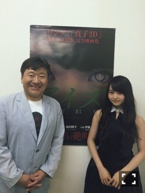
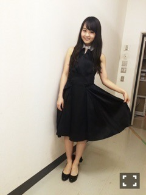
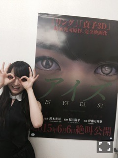

| 2015/05 29 Fri | アイズ。644回目 |
映画「アイズ」の
完成披露試写会がありました。

原作者の鈴木光司さんも
来てくださいました。

松原奈保役の山田朱莉ちゃん。
相変わらず元気で可愛かった...
映画隣で観てたんだけど、
あるシーンにビクッとしてて、
しめしめと思った＼(^o^)／
共演者のみなさんと
久しぶりにお会いできて
嬉しかったな。
おぞねさんと優恵さんが
共演できてよかったと
ハグしてくださいました。
子役の愛奈ちゃんから
お手紙もらって
弟役の慶二くんは手振ってくれて
照れてしまいました。
他にも共演者さんから
嬉しい言葉をたくさん
かけていただきました。
自分が主演だという
実感もないまま撮影は進んでいって
毎度撮り終わるたび大丈夫かな、
とひとりですごい不安になったり
いろいろ考え込むことが
何度もありました。
今考えると、自信がなくて、
映画に対する考えも甘かったな。
素晴らしい演者さんと
共演してすごく勉強になりました。
この経験は無駄にしては
いけないと思いました。
福田監督が言ってくださったように
次に繋げていきたいです。
監督さんスタッフさんキャストの
みなさん全員で力を合わせて
つくり上げたこの作品。
鈴木光司さんが描く
独特な怖さに加え、
ミステリー、人間ドラマと、
単なるホラー映画ではない
作品になっていると思います。
こんな素晴らしい作品に
主演できて光栄です。
アイドル、ホラーという
先入観にとらわれず
たくさんの方に観ていただきたい！

来てくださったみなさん
本当にありがとうございました！
すごく嬉しかった分
緊張もすごくて。
ぎこちなくてすみません。
異常なほど手汗かきました(*_*)
本編はどうでした？
感想お待ちしています。
◎舞台挨拶
6月6日 イオンシネマ板橋
6月9日 なんばパークスシネマ
6月13日 イオンシネマ板橋
イオンシネマ春日部
イオンシネマ幕張
6月14日 中川コロナ
公開日にも板橋に行きます！
地方にも行きます！
たくさんの方に
観ていただきたいです。
よろしくお願いします(^.^)

目！！！！！
まりか
コメント(620)
2015/05/29 09:18